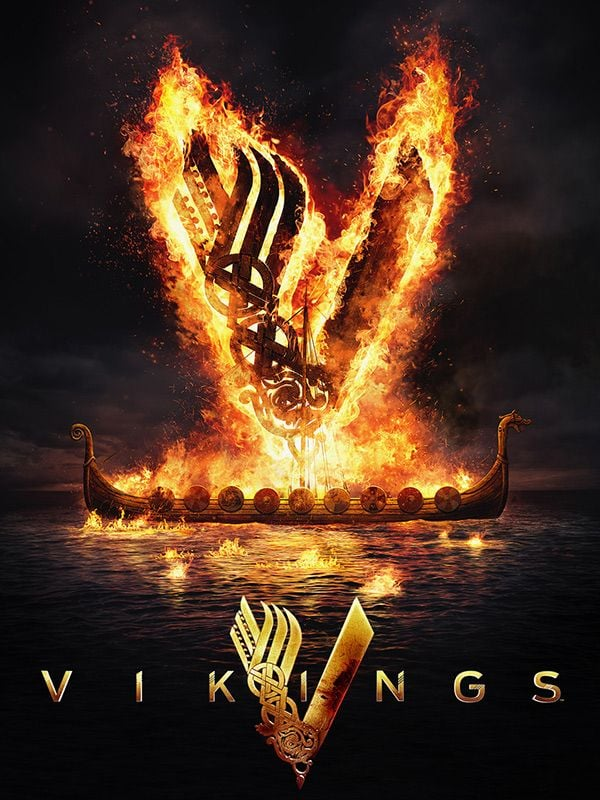

Una historia de conquistas
La historia comienza con Ragnar y su deseo de navegar hacia el oeste. A lo largo de la serie se muestran batallas, viajes, alianzas y conflictos entre diferentes pueblos.
La serie combina personajes históricos con elementos de las leyendas nórdicas.